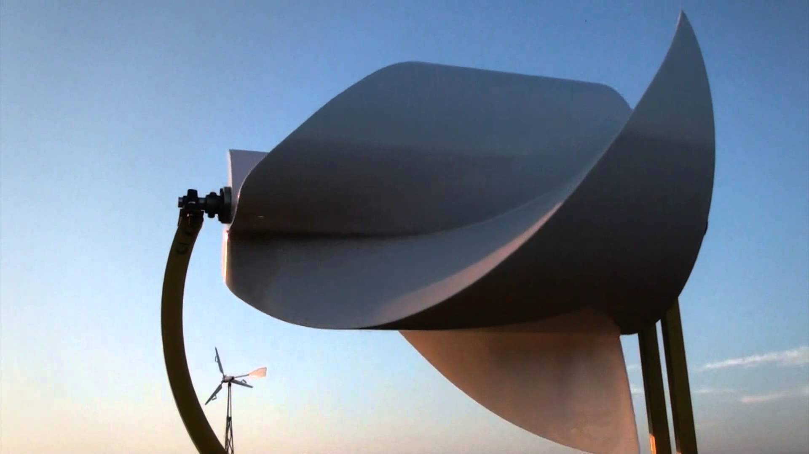
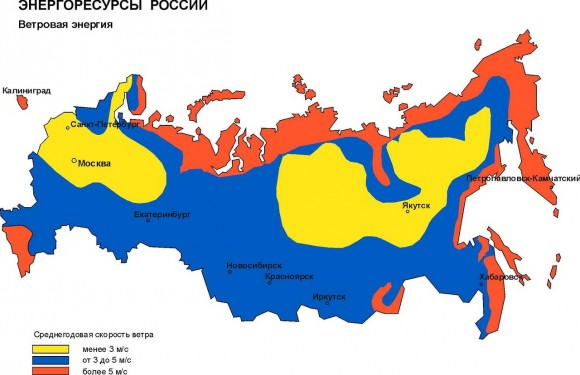

Эффективный ветряк
Никак не найду времени разгребать материалы, чтоб написать следующую статью по печке. И тут мне подкинули информацию, которой не могу не поделиться.
Сегодня речь пойдёт про зелёное электричество — энергию ветра. Конкретнее, про решение под названием "Ротор Онипко".
Самым большим недостаком работы ветряков часто является нехватка стабильной силы ветра. Есть и другие недостатки: шумность, небезопасность быстро вращающихся лопастей, сложность обслуживания. Частично эти проблемы решают вертикальные ветряки: они менее шумные (но всё же шумные), чуть более безопасны и проще обслуживаются (вся механика находится снизу).
Среди разных моделей реализации вертикальных ветряков есть мой любимчик, который я думал собрать самому. Советским инженером К.А.Угринским ещё до войны был разработан профиль лопасти... Короче, не буду давать подробности.
Но есть и другие интересные решения. С каждым днём их появляется всё больше. У меня есть пара знакомых, которые утверждают, что их коллега вроде как разработал какую-то хитрую модель ветряка и сейчас идут испытания. Вроде как планируется даже крупносерийный выпуск. Посмотрим как у них дело пойдёт, может даже напишу потом про их изыскания.
Но сегодня расскажу про ротор изобретателя Алексея Онипко.

Ротор Онипко
В интернетах пишут, что ротор этой конструкции уже не единожды представлялся на разных конференциях и изобретательских конкурсах. И даже был признан лучшей разработкой в мире в сфере «зеленой» энергетики и удостоен гран-при «Зеленый Оскар» на Всемирном конкурсе по возобновляемой энергетике в Нюрнберге в 2013 году.
Главным преимуществом ветряка конструкции Онипко является возможность получения энергии даже при скорости ветра 0,1 м/с. Для сравнения, горизонтальные лопастные ветряки начинают нормально крутиться только при скорости 3 м/с. И, если что, среднегодовая скорость ветра по разным регионам России колеблется в пределах 2-6 м/с.

Таким образом, возможность получения энергии даже при скорости ветра 0,1 м/с — огромный плюс ротора Онипко. Вырабатываемая им энергия возрастает с увеличением скорости ветра примерно до 15 м/с. Затем коэффициент падает, что уже не важно, так как такие ветра бывают редко и не бывают долгими. В среднем трехметровый ротор за месяц может произвести около 300 киловатт-часов электроэнергии.
Преимущества и недостатки
Еще одно преимущество ротора Онипко — это его бесшумность. Турбина работает на скорости до 100 оборотов в минуту, а это очень мало по сравнению с обычными ветряками. Это значит, что ротор не просто тише — он ещё и безопасней. Как для владельцев и их детей, так и для разного рода живности типа птиц.
Бесшумность и эффективная работа турбины достигается засчёт особой формы ротора. Кстати, вычитал что эту форму испытывают в качестве гребного вала для применения на суднах и мини-ГЭС, а также в качестве измерителя скорости ветра — последнее красноречиво намекает на чувствительность турбины к ветру.
Но, как всегда бывает, есть в этой конструкции и недостатки. Первое, что бросается в глаза лично мне — необходимость ориентации ротора по ветру. Хотя, учитывая чувствительность турбины к ветру и низкий порог выработки энергии, простейшего механизма кручения может и хватить.
Вообщем, надо пробовать и экспериментировать.
На последок вот вам занимательное видео с участием ротора Онипко.
Комментарии
Tatty
Я тоже заинтересовалась этим ротором, звонила им, но они его еще серийно не выпускают.Может у вас есть другая инф. по жтому поводу.
Свобода Изнутри
Если ротор не продаётся - это не повод не сделать его своими руками. Чертежи в интернете наверняка имеются.
Мирослав
Як бути з обледенінням в безвітрову погоду.
Свобода Изнутри
Как вариант — фен.
Нет электричества или фен не помогает — поможет горелка, бензиновая или газовая. Это из простых решений :)
Если же охота заморочиться, можно интегрировать обогревающий провод в лопасти. Типа такого, который используют для обогрева канализационных труб.